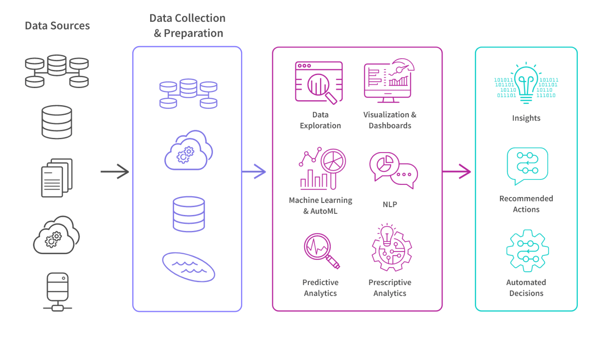

Unlocking the Power of AI Analytics: Transforming Data into Insights
In today’s data-driven world, businesses are inundated with information. However, raw data alone isn’t enough to drive informed decision-making. This is where the powerful combination of Artificial Intelligence (AI) and analytics comes into play. By leveraging these technologies, organizations can transform their data into actionable insights, ultimately leading to improved efficiency, enhanced customer experiences, and a competitive edge.
What is AI Analytics?
Artificial Intelligence refers to the simulation of human intelligence processes by machines, especially computer systems. It encompasses various technologies, including machine learning, natural language processing, and robotics, which can analyze data patterns and make predictions.
Analytics, on the other hand, involves the systematic computational analysis of data. It encompasses a range of techniques from statistical analysis to predictive modeling, enabling organizations to uncover trends and insights.
Key elements of AI analytics
AI analytics (also known as augmented analytics) enhances each aspect of data analysis by automating processes, improving accuracy and efficiency, enabling advanced techniques, and delivering specific insights and recommended actions.
The Synergy Between AI Analytics
The integration of AI with analytics is revolutionizing how businesses operate. Here are some key ways this synergy is making an impact:
- Enhanced Data Processing: Traditional analytics often struggle with the sheer volume of data generated daily. AI can process vast amounts of data quickly and efficiently, identifying patterns and anomalies that might go unnoticed.
- Predictive Insights: By utilizing machine learning algorithms, organizations can forecast future trends based on historical data.
- Automated Reporting: AI can automate the data reporting process, providing real-time insights without the need for manual intervention.
- Personalized Customer Experiences: AI-driven analytics can analyze customer behavior and preferences.
- Risk Management: AI and analytics can help organizations identify potential risks by analyzing data from various sources.
Real-World Applications
- Healthcare: Predictive analytics are being used to anticipate patient needs, optimize treatment plans, and enhance operational efficiency in hospitals.
- Finance: Financial institutions utilize AI to detect fraudulent transactions and assess credit risks.
- Retail: Retailers leverage AI-driven analytics to optimize inventory management and enhance the overall shopping experience.
By unlocking the full potential of their data, organizations can gain insights that drive strategic decision-making and foster innovation. Whether you’re a small startup or a large enterprise, investing in AI and analytics is no longer optional.